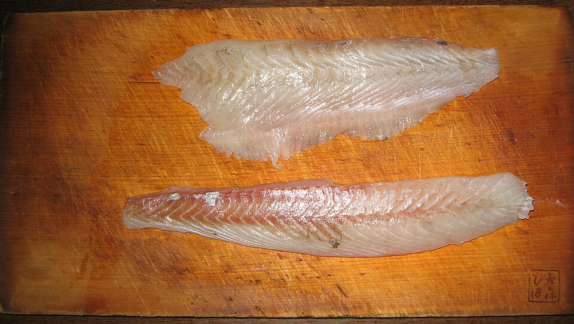
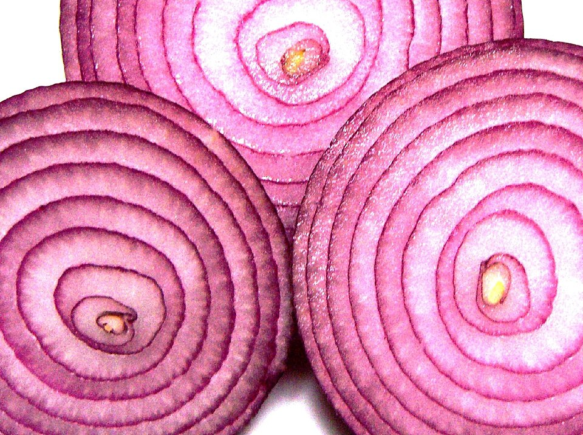
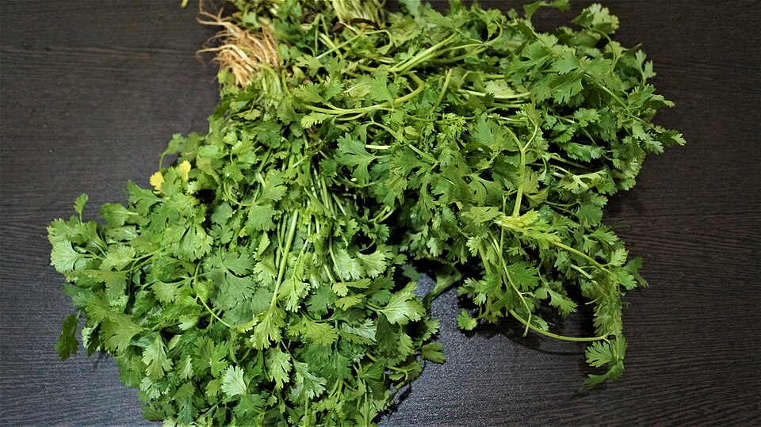
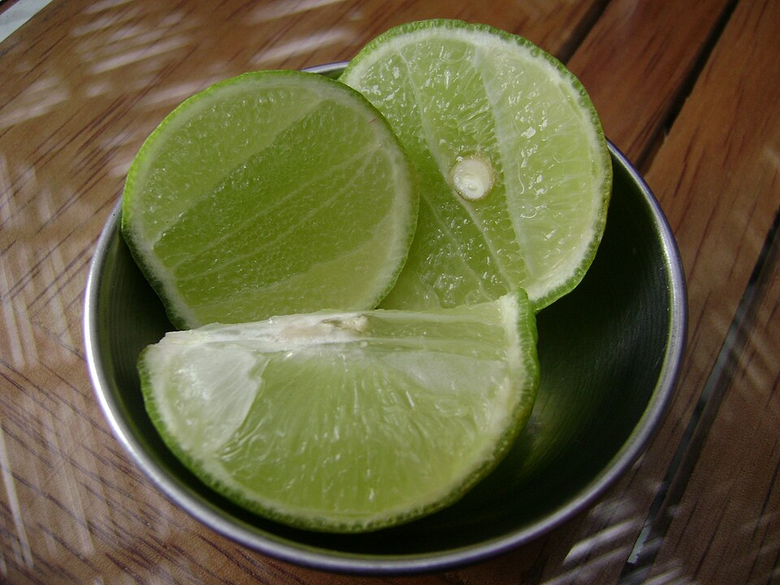

¿Qué necesitamos?
Cantidades aproximadas para 4 porciones.
-

Pescado
600 g de pescado blanco.
-

Cebolla
1 cebolla roja grande.
-

Condimentos
Sal al gusto, 1 ají limo y culantro picado opcional.
-

Limón
De 10 a 12 limones peruanos, según su tamaño.
Preparación
- Lávate las manos. Lava la cebolla, el ají y el culantro.
- Corta la cebolla en tiras finas y pica el ají y el culantro.
- Exprime los limones y retira las semillas.
- Corta el pescado en cubos con utensilios limpios. Para la práctica escolar, usa pescado bien cocido. En la versión tradicional, usa pescado tratado para consumo crudo y mantenlo refrigerado hasta usarlo.
- Mezcla el pescado con la sal, el ají y el jugo de limón.
- Agrega la cebolla y, si deseas, el culantro. Sirve de inmediato. Acompaña con camote, choclo y canchita.